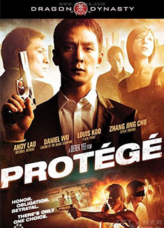
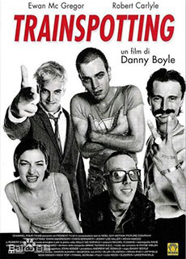
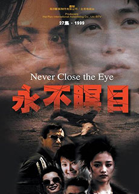
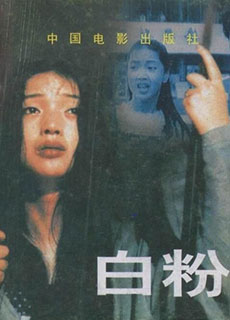

-

《门徒》
影片讲述一个关于毒品的故事，旨在告诉人们远离毒品珍惜生活，片中的每一个角色几乎都是毒品的受害者，但他们每个人都要为自己的结果承担责任。
-

《猜火车》
《猜火车》（Trainspotting）是1996年由英国导演丹尼•博伊尔执导的剧情片，影片讲述一群爱丁堡的海洛因瘾君子的生活。
-
《我的老公是卧底》
警嫂的丈夫不但是一名缉毒警，而且还是卧底，夫妻二人心有灵犀，为了救护一名可怜的毒娃，他们奉献出了大爱大勇。
-

《永不瞑目》
肖童为了爱人欧庆春，主动要求充当警方内线，打入贩毒集团，最终配合警方将欧阳天贩毒团伙一网打尽。
-
《爱在人间》
以真实戒毒人员生活为原型，旨在通过对吸毒人员的关爱与挽救让他们重燃对生命的热爱和希望，并让他们重新回归社会成为新人。
-

《白粉妹》
影片描写了改革开放前沿阵地南方家庭因毒品危害的裂变，反映了社会变革时期人性的丑恶。